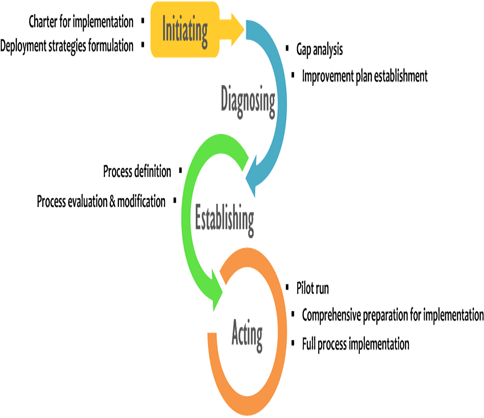

| Guideline: Introduction to PMM Lifecycle |
 |
|
Main Description

The model shown in the below figure depicts the major phases of an process Management (PM) initiative, which provide a continuous loop through the steps necessary for the PM. It is important to note that the length of time it takes to complete a cycle through the PIM model will vary from project to project and from department to department . |